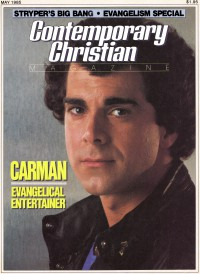

Carman
|  |
| May 1985 CCM |
 |
| July 1987 Charisma |
 |
| April 1992 Religious Broadcasting |
Media coverage:
- May 1985 in CCM "Carman On Strong!", by Davin Seay
- Dec 1985 in CCM "News Beat: Express Yourself", by Dick Curd
- Dec 1986 in CCM "Notebook: Carman Celebrates"
- Feb 1987 in CCM "In Concert: Carthage College, Kenosha, WI", by Terry L. Ray
- Feb 1987 in Charisma "Why Do They Sing?"
- Jul 1987 in Charisma "Putting Ministry First", by Brian Bird
- Feb 1988 in CCM "In Concert: Macon Coliseum, Macon, GA", by Howard Davis
- Mar 1988 in CCM "The CCM Interview", by John W. Styll
- Dec 1988 in CCM "Notebook: Carman's 'Radical' Contest Winners Announced"
- Dec 1989 in CCM "In Concert: Market Square Arena, Indianapolis, IN", by Annett D. Ridley
- Feb 1990 in CCM "Praying For Revival", by Stephanie Bennett
- Jun 1991 in CCM "In Concert: The Village Green, Durban, South Africa", by Jasper Cecil
- Dec 1991 in CCM "In The News: Carman Clip Causes Controversy"
- Apr 1992 in Religious Broadcasting "The Gospel Music Video à la Carman & Yake", by Mellie Matula
- 9 Nov 1992 in Christianity Today "News: North American Scene: Singer Carman Switches From Benson to Liberty"
- Jul 1993 in Charisma "News Item: Gospel Lawyer Under FBI Investigation", by Ana Gascón Ivey
- Oct 1993 in CCM "Raising The Standard", by John W. Styll
- Nov 1993 in Charisma "Where Ministry And Music Meet", by Carol Chapman Stertzer
- May 1994 in CCM "In Concert: Thompson Boling Arena, Knoxville, TN", by Rhonda Miskowski
- Apr 1995 in CCM "Prayer 101?", by Perucci Ferraiuolo
- Aug 1995 in CCM "In The News: Carman Out of a 'Jam: Staging Problems Nix JoyJam Appearance", by Debra Akins
- Jan 1997 in CCM "On The Beat: Holy Hollywood", by Marykay Selby
- Jul 1997 in New Man "Close Up: Carman"
- Nov 2000 in CCM "On The Beat: He's an 'Ongoing Event'", by Melissa Riddle
- Feb 2001 in CCM "No Guts, No Glory", by Melissa Riddle
- Mar 2001 in CCM "In Concert: TD Waterhouse Center, Orlando, FL", by Natalie Nichols Gillespie
- Nov 2003 in CCM "'x' Things You Probably Didn't Know About...: Carman", by Michael Nolan
- Aug 2004 in CCM "List-O-Rama: 5 Christian Artists on the Big Screen", by Chris Well
- Mar 2005 in CCM "Hall of Fame: Carman", by Michael Ciani
- Jan 2007 in CCM "History Makers: Moments that Shaped CCM: Comin' On Strong", by John W. Styll
- Apr 2013 in Charisma "Inform: Carman Wages War on Cancer", by Jennifer LeClaire
- Jun 2013 in CCM Digital "The Gamechanger: God Helps Carman Bring a Death Sentence to Life", by Caroline Lusk
Albums & reviews:
1982: Some O Dat
1984: Comin' On Strong
1986: A Long Time Ago...In a Land Called Bethlehem
1989: Revival In The Land
1992: Addicted To Jesus [Video]
1993: The Standard
1995: Raising The Standard Live
1995: R.I.O.T. (Righteous Invasion Of the Truth)
1998: Mission 3:16
2000: Heart of a Champion
2003: House of Praise
- Mar 1982 in CCM, by Carolyn A. Burns
- May 1982 in Campus Life, by Jim Long, Nathan Young
1984: Comin' On Strong
- Jan 1985 in MusicLine, by Phillip R. Templeton
- Jun 1985 in Christian Herald, by Peter Gross
- Apr 1986 in Campus Life, by Jim Long
1986: A Long Time Ago...In a Land Called Bethlehem
- Dec 1986 in Campus Life, by Jim Long
- Dec 1986 in Charisma, by Steve Lawson
- Dec 1986 in CCM, by Bruce A. Brown
- Dec 1986 in Christian Herald, by Peter Gross
- Dec 1986 in Christian Life, by Brian Peterson
- Feb 1986 in CCM, by Thom Granger
- Apr 1988 in CCM, by Mike Atkinson
- May 1988 in Charisma, by Steve Lawson
1989: Revival In The Land
- Nov 1989 in CCM, by Jon Woodhams
- Dec 1989 in Campus Life, by Jim Long
- Oct 1990 in CCM, by Jena White
- Win 1991 in YouthWorker, by Jim Hancock
- Nov 1991 in CCM, by John W. Styll
- Dec 1991 in Campus Life, by Jim Long
- Jan 1992 in Today's Christian Woman
- Jan 1992 in Syndicate, by Brian Quincy Newcomb
- Jan 1992 in Christian Herald, by Peter Gross
- Mar 1992 in Charisma, by Samuel Autman
- May 1991 in CCM, by Jena White
- Aug 1991 in Charisma, by Carol A Chapman
- Sep 1991 in Christian Herald, by Peter Gross
- Mar 1992 in Today's Christian Woman
- Jan 1993 in Moody, by Bonnie Burnett
- Feb 1993 in Religious Broadcasting, by Darlene A Peterson
- Feb 1993 in Charisma, by Katrina Schmitz
1992: Addicted To Jesus [Video]
- Oct 1992 in CCM, by Jamie Lee Rake
- Jun 1993 in Religious Broadcasting, by Darlene A Peterson
1993: The Standard
- Oct 1993 in CCM, by Jena White
- Oct 1993 in Charisma
- Dec 1993 in The Lighthouse, by Ann Hathcock
- Jan 1994 in Campus Life
- Sum 1994 in YouthWorker, by Steve Rabey
- Jun 1994 in Religious Broadcasting, by Darlene A Peterson
- Jul 1994 in Charisma, by Lynne Marian
- Apr 1995 in CCM, by Jamie Lee Rake
1995: Raising The Standard Live
1995: R.I.O.T. (Righteous Invasion Of the Truth)
- Nov 1995 in CCM, by Jimmy Stewart
- Win 1996 in YouthWorker, by Rich Ratts
- Mar 1996 in Campus Life
- Jun 1996 in Religious Broadcasting, by Sarah E. Smith
- Dec 1996 in CCM, by Jamie Lee Rake
- Dec 1996 in CCM, by Jamie Lee Rake
- Feb 1997 in Religious Broadcasting, by Sarah E. Smith
- Jun 1996 in Religious Broadcasting, by Sarah E. Smith
- May 1997 in CCM, by Mike Nappa
- May 1997 in Charisma, by Lindy Warren
- Dec 1998 in CCM, by Wendy Lee Nentwig
1998: Mission 3:16
- Feb 1998 in CCM, by Dave Urbanski
- May 1998 in YouthWorker, by Janie-Sue Wertheim
- Jun 1998 in Charisma, by Bruce A. Brown
- Feb 2003 in CCM, by Dave Urbanski
2000: Heart of a Champion
- Jan 2001 in YouthWorker, by Dave Urbanski
- Jan 2001 in New Man
2003: House of Praise
- Nov 2003 in YouthWorker, by Dave Urbanski
- Dec 2003 in CCM, by Lizza Connor
- May 2013 in CCM Digital, by Andy Argyrakis
- 1 Jun 2014 in CCM Digital, by Andy Argyrakis
- 1 Mar 2015 in CCM Digital, by Grace S. Aspinwall
Award Summary (Nominations / Wins)
Dove Awards- 1987 Dove Awards
- Contemporary Album: A Long Time Ago...In a Land Called Bethlehem
- Male Vocalist
- Artist
- Long Form Music Video: Carman Live... Radically Saved [Video]
- Contemporary Album: Carman Live... Radically Saved
- Artist
- Contemporary Album: Revival In The Land
- Artist
- Short Form Music Video: "Revival In The Land"
- Short Form Music Video: "A Witch's Invitation"
- Long Form Music Video: Revival In The Land [video]
- Rap/Hip Hop/Dance Recorded Song: "Addicted To Jesus"
- Children's Music Album: Yo! Kidz!
- Long Form Music Video: Addicted To Jesus [Video]
- Contemporary Recorded Song: "Somewhere Within the Heart"
- Praise & Worship Album: Lord of All, Songs of Carman
- Inspirational Recorded Song: "Serve the Lord"
- Rap/Hip Hop/Dance Recorded Song: "Who's In The House"
- Song: "America Again"
- Children's Music Album: Yo! Kidz! 2: The Armor Of God
- Long Form Music Video: The Standard [Video]
- Long Form Music Video: Raising The Standard Live
- Rap/Hip Hop Recorded Song: "R.I.O.T. (Righteous Invasion Of Truth)"
- Inspirational Album: I Surrender All: 30 Classic Hymns
- Long Form Music Video: Mission 3:16: The Video
- Enhanced CD: Mission 3:16 Super CD:5
- 1998 Grammy Awards
- Best Pop/Contemporary Gospel Album: Mission 3:16
Books about Carman
- "Carman" in The Encyclopedia of Contemporary Christian Music (Mark Allan Powell, 2002)
- "Carman" in The Billboard Guide to Contemporary Christian Music (Barry Alfonso, 2002)
© 2011 CMnexus. Last updated September 2019. Contact: editor -AT- cmnexus -DØT- org About